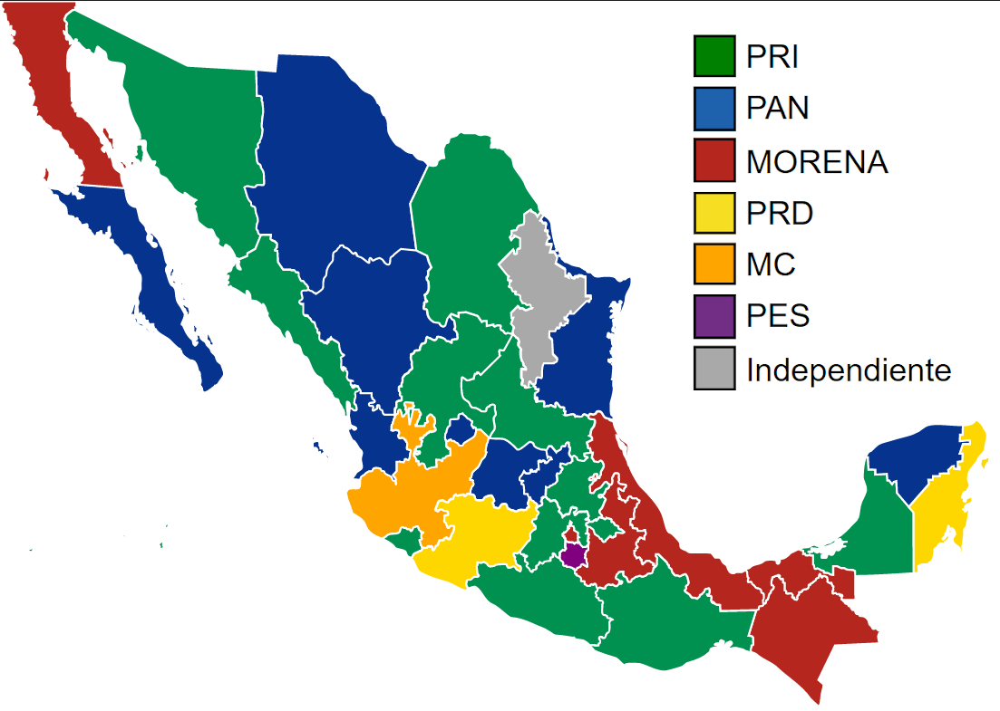

Datos nacionales
Datos actualizados al día
casos confirmados
defunciones
% de letalidad
Casos confirmados acumulados
Casos confirmados diarios
Defunciones acumuladas
Defunciones diarias
Datos por partido
Tabla general
| Partido | Casos confirmados | Defunciones | % de letalidad |
|---|
Preguntas frecuentes
¿Que estados pertenecen a que partidos?
La distribución de estados según el partido que los gobierna es la siguiente:
-
PRI: Campeche*, Coahuila, Colima, Guerrero, Hidalgo, Estado de México, Oaxaca, San Luis Potosí, Sinaloa, Sonora, Tlaxcala y Zacatecas. (12 estados).
-
PAN: Aguascalientes, Baja California Sur, Chihuahua, Durango, Guanajuato, Nayarit, Querétaro, Tamaulipas, Yucatán. (9 estados).
-
MORENA: Baja California, Chiapas, Ciudad de México, Puebla, Tabasco y Veracruz. (6 estados).
-
PRD: Michoacán y Quintana Roo. (2 estados).
-
Movimiento Ciudadano: Jalisco. (1 estado).
-
Encuentro Social: Morelos (1 estado).
-
Independiente: Nuevo León (1 estado).
*Campeche es gobernado oficialmente por un gobernador sustituto, pero es militante del PRI y el antiguo gobernador también es del PRI por lo que se cuenta como gobernado por el PRI.
Mexico Governors Map de Wikimedia Commons
¿De donde se obtienen los datos mostrados?
Los datos son obtenidos del sitio web oficial del Gobierno de México https://coronavirus.gob.mx/datos/
¿Qué es el porcentaje de letalidad?
El porcentaje de letalidad o tasa de letalidad es la proporción de personas que han muerto por COVID entre la cantidad de casos confirmados.